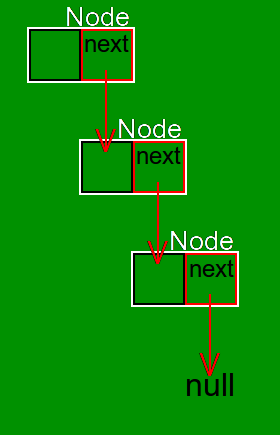

C++ Tutorial 8 - Classes.
12/19/2016
Here we will go over making
a linked_list.
Start out by declaring a class:
class linked_list {};
Now we have to figure out what our linked list is.
Our linked_list is a data
structure that looks like this. Each black box is an
element, each red box is a pointer. The white boxes are
"nodes".

Each node owns its element, the black box, and the next node, the red arrow. When we have a "value type" it matches the lifetime of the owner. This means that if the node was represented as:
class linked_list {
public:
using element = int;
private:
class node {
public:
element elem;
node next;
};
};
Then when we make our first node, it immediately makes the second node, which makes the third node, and so on. The compiler sees that this will recurse infinitely and will give us an error to express this.
BTW the node is placed
inside the linked_list
(and is private to the linked_list)
because it is only to be used by
the linked_list, and will
interact with the user through
the linked_list.
So to represent a node, we have to learn how to detach the
lifetime of it and the next node. To do this we use a
unique_ptr. This class
lives in the header
file <memory>.
Just like a vector, we
must specify the type it encloses
via <>.
#include <memory>
class linked_list {
public:
using element = int;
private:
class node {
public:
element elem;
unique_ptr<node> next;
};
};
Now declare and define a constructor for the node that takes an element by constant reference.
Toggle Answer Visibility
The final node's next node will be represented by a null
pointer, written nullptr.
So if we directly own
a node from
the linked_list class,
and the node owns
an element, then there
will always be at least one element in
the linked_list. This is
not the intended behavior, because the default state
should be to have no elements. This means that the
lifetime of the
first node is distinct
from that of
the linked_list.
Therefore, we need to use
a unique_ptr to represent
the first node.
class linked_list {
public:
using element = int;
private:
class node {
public:
element elem;
unique_ptr<node> next;
};
unique_ptr<node> head;
};
Now we are going to declare and define the default constructor, which will start the list out with no elements. Try to do this yourself without reading ahead!
Toggle Answer Visibility
Now that we can construct
a linked_list, let's
define some simple behavior. First we will define a
method to add an element to the front of the list,
called push_front. To do
this we create a node to house this element, move
ownership of the head to
this new node, then move this new node to
the head. We move
ownership by using the
function move.
// in class linked_list
void push_front(element const&);
// then define outside it
void linked_list::push_front(element const& elem) {
// we must explicitly call the constructor of unique_ptr when
// allocating a new node.
unique_ptr<node> node(new node(elem));
// move ownership of the head to this new node
// * will get the actual node rather than the pointer to the node.
(*node).next = move(head);
// move the new node to the head
head = move(node);
}
The new keyword tells the
computer to allocate memory for the object on the heap.
When we move
a unique_ptr, we are
moving the memory address for this object, rather than
moving the object itself. Since we have to clean up this
memory at some point,
the unique_ptr that owns
that pointer will .
Let's define a method to remove the first
element: pop_front. This
will take ownership of the second element, then replace
the head with it. Try to express this yourself.
Toggle Answer Visibility
So now that we have the basic methods of inserting and removing elements from the front of the list, we need to implement clearing the list. A basic implementation of clearing the list will take ownership of the entire list and stop. Try to implement this. This is intended as a recap on how to acquire ownership of a resource. We will extend the implementation later.
Toggle Answer Visibility
Now we are going to implement an iterator. We are going
to use two different approaches and explore both. The
premise of an iterator is that it allows us to access each
element in the container, in this case
the linked_list. Note
that it doesn't transfer ownership of these elements.
Approach #1
Here we will mimic the structure of
our node class to
implement the iterator. We have to use pointers and not
references because we wish to redirect the pointers to
different elements and nodes.
// inside linked_list
public:
class iterator {
element* elem;
node* next;
public:
};
We need to be able to construct the iterator with two
pointers, one to an element and one to a node. If we make
this constructor public,
then anyone can initialize our iterator to an incorrect
value. If we make
it private, then
the linked_list class
can't access it.
To correctly implement this, we need to use a special
keyword: friend. Only
you and your friends can
touch your private
members and methods. Add the following line to the
iterator and then declare and implement a private
constructor that takes the two pointers. We also want a
public default constructor that does nothing.
// in iterator
friend class linked_list;
Toggle Answer Visibility
Now we need to define four methods: an equals comparison operator and an unequal comparison operator, an increment operator, and a dereference operator.
The equals comparison
operator, operator==(other),
will simply compare if the elements pointed to are the
same object. The unequal comparison
operator, operator!=(other),
will simply return the inverse of the previous.
The increment
operator, operator++(),
will need to bring the iterator to the next element.
The dereference
operator, operator*(),
will retrieve the current element.
On const and its
applicability to these functions. This keyword describes
the current object. When a method
on linked_list
is const, it means that
the linked_list and the
elements it owns will not be modified via this method.
Since an iterator does
not own the elements it points to, the dereference
operator should return a non-constant reference and be
declared as const in
its effect on
the iterator, because
it doesn't change
the iterator.
// in iterator
bool operator==(const iterator&) const;
bool operator!=(const iterator&) const;
// return a reference to self. non-const because modifies this
iterator& operator++();
// non-const because modifies this
element& operator*() const;
// compare elements by memory address to see if they are the same object. Pointers are memory addresses
bool linked_list::iterator::operator==(const iterator& other) const {
return elem == other.elem;
}
// call operator==
bool linked_list::iterator::operator!=(const iterator& other) const {
return !(*this == other);
}
iterator& linked_list::iterator::operator++() {
elem = next->elem;
// since next->next is a unique_ptr, get the actual pointer with .get()
next = next->next.get();
return *this;
}
element& linked_list::iterator::operator*() { return *elem; }
This code has a bug
in operator++(). The bug
is due to the nature of our implementation of the
linked_list's final
element. Try to find it yourself.
Toggle Explanation Visibility
What's happening is that when the final element of the list is reached, the next pointer will be null. We don't test for it to be null before using it, causing bad things to happen. We have to wrap null checks around the increment operator to fix this. A non-null pointer is true.
iterator& linked_list::iterator::operator++() {
if (next) {
elem = next->elem;
next = next->next.get();
} else {
elem = nullptr;
next = nullptr;
}
return *this;
}
Now we will implement the
method insert_after().
This method is very similar
to push_front(). To do
this we need to create a new node for our element, move
ownership of the node after the iterator to the new node,
then the new node as the iterator's next node.
To express ownership of the next node in the iterator, we
must use a unique_ptr.
But we didn't use
a unique_ptr, we used a
normal pointer to the next element.
We must restructure our implementation of
the iterator to correctly
express this.
Approach #2
This time, instead of mimicking
a node, let's use
the node directly. Since
the iterator doesn't own
the node, and can be
reassigned to
different nodes, it must
be a pointer.
class iterator {
node* current;
iterator(node*);
public:
iterator();
bool operator==(const iterator&) const;
bool operator!=(const iterator&) const;
iterator& operator++();
element& operator*(const iterator&) const;
};
Toggle Definition Visibility
Now let's try to implement
the insert_after()
method.
// in linked_list
void insert_after(iterator, element const&);
// for inspiration, look at our push_front:
void linked_list::push_front(element const& e) {
unique_ptr<node> node(new node(e));
node->next = move(head);
head = node;
}
Toggle Implementation Visibility
Now implement erase_after().
Toggle Answer Visibility
Now we need to define the
methods begin()
and end() so that we can
use the iterators. The
begin() method will
return an iterator
pointing to the first element, and
the end() method will
return an iterator that
points to the object after the last -- in this case,
looking at the diagram, null.
Toggle Answer Visibility
And now we are done implementing
our linked_list.